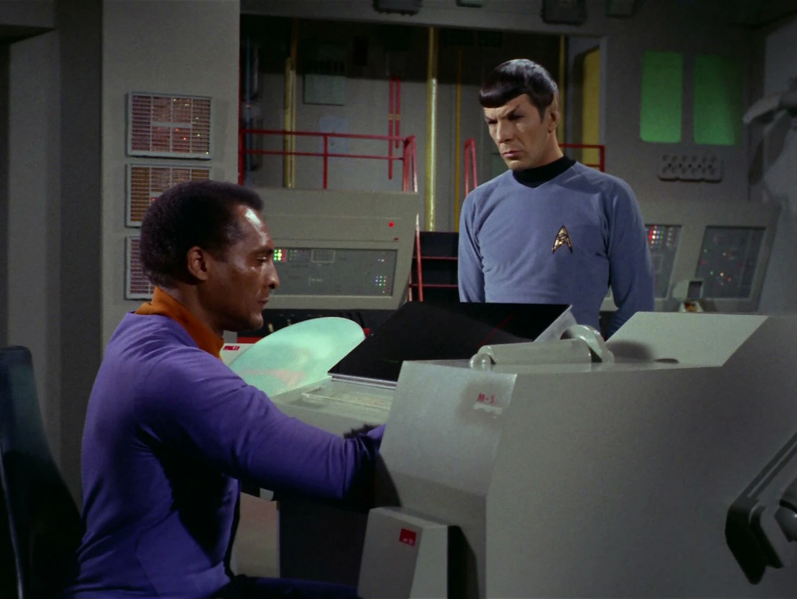
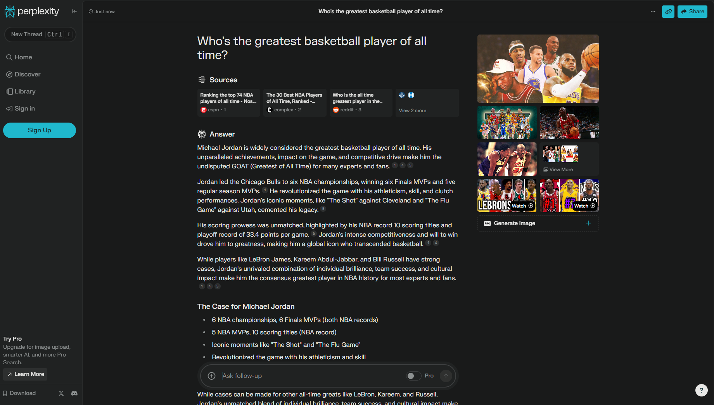
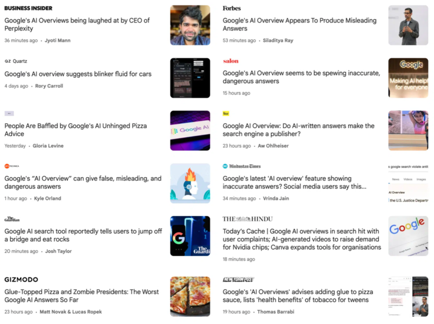
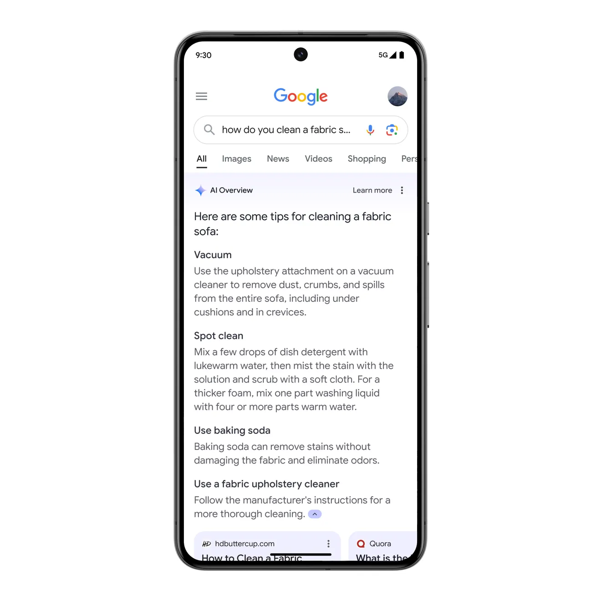

Search Is Changing And It Will Effect What People Click On
AI and Search are both question-answering machines. Until recently Google had the best question-answering machine, gathering a dominant 90% market share amongst search engines. However AI has challenged this stranglehold by answering questions in new ways. AI can generate more personalized results, reason in multiple steps, and learn through many different modalities. Plain old Google is no longer the best question-answering machine and the company has just made a major move to address it’s shiny new competition. This paradigm shift signals a major change for those in the business of providing answers, particularly SEO marketers. So, what does this mean for the evolving landscape of SEO, will you lose valuable clicks,and what can you do about it?
“When search grows up, it will look like Star Trek: you talk into the air (“Computer! What’s the situation down on the planet?”) and the computer processes your question, figures out its context, figures out what response you’re looking for, searches a giant database in who-knows-how-many languages, translates/analyses/summarises all the results, and presents them back to you in a pleasant voice. I think this technology is about, oh, 300 years off.” - Craig Silverstein, Google CTO (2003)
The StarTrek Computer

During last weeks annual developer conference Google made several bombshell AI announcements including major changes to its flagship product Google Search. Google is expanding search capabilities using it’s own generative AI model Google Gemini. The new model, which integrates real-time data and advanced ranking systems, is designed to make search more accurate and efficient. Here are the new features:
- AI overviews: Google will now include AI overviews of search results with the links to the websites the AI has summarized below.
- Multi-step Reasoning: Google introduces multi-step reasoning to break down complex queries into sub-questions, providing detailed and organized overviews.
- Advanced Planning Capabilities: Google’s AI can assist with planning tasks like meal plans and trips, providing detailed and customizable plans.
- AI Organized Pages: For brainstorming and inspiration, Google provides AI-organized search result pages with various clusters of information.
- Video-based Search Queries: Google introduces the ability to ask search questions using videos, leveraging advanced speech and visual recognition technologies.
Adding these sort of features improves the depth and breadth of questions search results are able to answer. Since AI was introduced to Microsoft Edge in the form of BingChat I’ve actually switched from Google to Edge as my main browser. I find the AI search results and websites complementary, since sometimes it will just tell you the answer to your question instead of having to click on a link. I also like having the option to chat with an LLM because they tend to be better for certain types of questions, often when I have a lot of follow up questions connected to the first one. Based on my own search habits I tend to think how companies choose to integrate AI into search will be one of the most important factors for consumers in the long term.
Perplexing a Monopoly

This development from Google is a direct response to the new kids on the block: AI search engines. The leader of the pack right now is Perplexity, the AI powered “Swiss Army Knife” for information discovery and curiosity. Perplexity is an AI startup that began in 2022 and today has raised $165 million in funding and is valued at over $1 billion. Behind a modern suave looking UI, Perplexity interprets the context of the user queries and provide a personalised search result complete with inline citations and website URLs. It provides the unbique ability to “chat with the web” almost as you would a person. With over 2 million downloads and responding to 1 million queries per day, the company is experiencing the sort of rapid adoption that could start to chip away at Google’s massive search engine market share. While Perplexity has plans to display ads in the “related questions” section of its search results this form of brand-sponsored queries has not been rolled out yet and introduces a whole nother can of worms. Browsers like Brave and Bing have also release AI search tools which are integrated into their existing search products and OpenAI is rumored to be releasing their own search tool soon. This wave of industry innovation highlights the economic realities of Google’s decision in this competitive market. We can’t ignore the bottom line market dynamics that are the true catalyst for this move. Not that there’s anything inherently wrong with trying to maintain market shar on the competition, Google absolutely should be doing such things. More to say we should take Google’s rosy utopian optimism about certain aspects of this technology with a grain of salt, holding them to a high standard of corporate responsibility and recognizing their dominant role as the world’s favorite serarch engine.
This won’t increase clicks. Stop gaslighting us.

What I’m getting at is statements like these:
“With AI Overviews, people are visiting a greater diversity of websites for help with more complex questions. And we see that the links included in AI Overviews get more clicks than if the page had appeared as a traditional web listing for that query. As we expand this experience, we’ll continue to focus on sending valuable traffic to publishers and creators. As always, ads will continue to appear in dedicated slots throughout the page, with clear labeling to distinguish between organic and sponsored results.” - Liz Reid, VP, Head of Google Search (2024)
Where do they see that? What’s the evidence? Where are the research papers? When asked such question Google has remained evasive. While it may be a while until proper research comes out it seems clear that at least some types of websites will lose traffic. Furthermore there are ethical dilemmas surrounding how these models are trained that make this situation seems that much worse. These AI overviews are trained on data from the very websites that are getting screwed over. Moreover, there’s no way for smaller sights to combat this. While companies like OpenAI have lists that can allow companies to not consent to using their information as training data, it’s different for Google. This is because Google’s web crawler both scrapes the web for data to train on and participates in ranking search results at the same time. Large media companies have had some success getting paid for allowing AI companies to use their content for training, but the little fish haven’t.
My best defense of Google is that they are fundamentally an advertising company. No one is hurt more if AI overviews compromise ad revenue than Google themselves. So then why are they doing this? This cuts to the core of Google’s biggest internal conflict as a company: their dual commitment to appeasing users and advertisers. If Google is to maintain market share they must make a better search product, and if they want to make money they must make figure out how to get advertisers more clicks. Notice the subtleties to the way Google rides this line: undercover search ads, product suggestions, and soon AI suggestions. It’s a bit frustrating Google can’t have an honest nuanced discussion about these fundamental realities of their decision and instead rely on umbrella claims backed by nonexistant evidence.
How will this impact SEO?

There are plenty of search queries that an AI generated response at the top of the page will answer far better than an actual website landing page. It will probably be a little bit until conclusive research has come out on this topic, but that doesn’t have to stop us from speculating. Based on my experience using Bing, there are some types of questions that AI is better at answering and some that traditional search is better at, and I think saying “quality content” will get the edge is a little reductive. To illustrate this here are a couple areas where AI-generated responses are likely to excel:
- Simple Fact-Based Questions:
- Example: “What is the capital of France?”
- AI Response: “The capital of France is Paris.”
- Traditional Search: Multiple links to articles and websites with the same information, often requiring more clicks to find the answer.
- Example: “What is the capital of France?”
- Summarized Information:
- Example: “Summarize the plot of ‘Pride and Prejudice.’”
- AI Response: A concise summary of the book’s plot.
- Traditional Search: Links to various summaries, requiring users to read through and piece together the information.
- Example: “Summarize the plot of ‘Pride and Prejudice.’”
- Calculations and Conversions:
- Example: “Convert 100 USD to EUR.”
- AI Response: The conversion result based on current exchange rates.
- Traditional Search: Links to currency conversion tools and websites.
- Example: “Convert 100 USD to EUR.”
- Definitions and Explanations:
- Example: “What is photosynthesis?”
- AI Response: A brief explanation of photosynthesis.
- Traditional Search: Links to educational websites and articles.
- Example: “What is photosynthesis?”
Meanwhile, here are some areas where traditional search will likely maintain the edge:
- In-Depth Research:
- Example: “What are the latest advancements in cancer research?”
- AI Response: An over-generalized and simplistic interview overview with outdated information.
- Traditional Search: Access to recent research papers, articles, and news reports from credible sources.
- Example: “What are the latest advancements in cancer research?”
- Product Reviews and Comparisons:
- Example: “Best laptops under $1000.”
- AI Response: A general recommendation, possibly augmented by advertising in some way in the near future.
- Traditional Search: Detailed reviews, comparison articles, and user feedback from multiple websites.
- Example: “Best laptops under $1000.”
- Local Services and Businesses:
- Example: “Best Italian restaurants in New York City.”
- AI Response: A short list based on popular choices.
- Traditional Search: Links to review sites, maps, and detailed information about each restaurant.
- Example: “Best Italian restaurants in New York City.”
- Detailed How-To Guides:
- Example: “How to install a new hard drive in a laptop.”
- AI Response: A brief set of steps.
- Traditional Search: Comprehensive guides, video tutorials, and forums with troubleshooting tips.
- Example: “How to install a new hard drive in a laptop.”
Chances are you can probably tell if AI overviews are going to be a problem for your website, but if you’re unsure you can evaluating the three S’s: Simplicity, Specificity, Speed.
- Simplicity: If the query can be answered with a straightforward fact or a brief summary, AI-generated responses are likely to satisfy the user’s needs. Examples include factual questions, basic definitions, or simple instructions. In such cases, AI might reduce traffic to your site. If the answer requires nuanced, highly specialized information, detailed explanations, or in-depth analysis, traditional search results will be more valuable. Users looking for comprehensive guides, detailed reviews, or complex research findings will benefit more from visiting multiple sources.
- Specificity: Queries seeking broad or introductory information can often be adequately addressed by AI-generated summaries. This includes overviews, brief descriptions, or basic knowledge that doesn’t require deep verification or sources. Specialized Information: If the user needs detailed, specific, and highly accurate information, they are more likely to rely on traditional search results. This includes queries that demand expert opinions, technical details, or verified data from reputable sources.
- Speed: For queries where users expect rapid, concise answers, AI-generated responses will often be sufficient. These users are typically looking for immediate results without needing to dive into detailed content. If your users are typically willing to spend time reading through detailed articles, watching comprehensive tutorials, or exploring in-depth content, traditional search results will better meet their needs. These users value thoroughness and are prepared to invest time in understanding complex information.
The three S’s can also be useful guidlines to adjusting your SEO strategy to fit this evolving environment. If you’ve seen a tick down in your website traffic since Google’s AI overviews it’s likely because of one of these three factors. Search has seen many advancements in its features throughout its 20ish year lifespan. Change is, fortunately or unfortunately, a constant the SEO digital marketing landscape. There will be ways to game AI overviews, similar to traditional search and those who figure out the best strategies will get still ahead in the race to the top of the page. Especially as advertising becomes integrated on a more normalized basis this will be an interesting area to keep an eye on. Those who stick to their old methods will be mercilessly ruled out and there’s likely to be a thinning of the pack in a lot of digitally focused industries. However this is not the end of search or SEO, rather it’s the beggining of a new paradigm. The sites that survive this shift will be the one most adapted to the new search environment. Keep evolving and stay groovy.